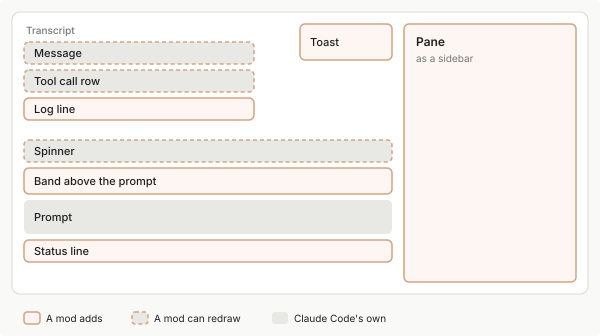
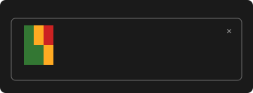

使用 mod 在界面中绘制
从 Claude Code mod 中绘制窗格、输入框上方的条带、按钮和文本字段，处理按键和输入，并在重绘和会话之间保持状态。
mod 可以在 Claude Code 中绘制自己的界面，并更改 Claude Code 已经绘制的界面部分。mod 可以绘制的每个位置称为渲染站点，例如窗格、输入框上方的条带或加载指示器。Claude Code 每次即将绘制渲染站点时都会触发 ui.render 事件，您为该事件编写的 hook 返回要在那里绘制的内容。
此地图显示 mod 可以在终端会话中的绘制位置：

在较窄的终端中，窗格位于输入框上方而不是会话记录旁边。
在开始之前，请先构建您的第一个 mod。从完整示例开始，该示例构建一个具有两个选项卡和一个计数器的窗格，然后阅读您想要更改的每个部分对应的章节。
要查找某个属性或限制，请参阅参考。
构建带有选项卡的窗格
在本部分中，您将构建一个 mod，该 mod 添加 /hello-tabs 命令，该命令打开一个窗格。窗格是在宽全屏终端中会话记录旁边的侧边栏，或在其他情况下是输入框上方的框架区域。此窗格显示两个选项卡，第二个选项卡有一个按钮，可以将计数器加一。重新启动 Claude Code 后，计数仍然存在。
完成的 mod 看起来像这样。录制内容打开窗格，切换到第二个选项卡，按几次按钮，然后返回到第一个选项卡：
选项卡是一行中的两个按钮。mod 跟踪哪一个是活动的，并在该行下方绘制该选项卡的内容。
1. 创建插件
mod 是一个具有清单、指向您的代码的 hooks.json 和代码文件的插件。创建 mod 解释了每一个。创建一个名为 hello-tabs 的目录，其中包含 .claude-plugin 和 hooks 目录，然后保存前两个文件。
将清单保存为 hello-tabs/.claude-plugin/plugin.json：
{
"name": "hello-tabs",
"version": "0.1.0",
"description": "Opens a pane with two tabs and a counter",
"author": { "name": "Your Name" }
}
在 hello-tabs/hooks/hooks.json 中命名您的入口点：
{
"modules": ["./register.js"]
}
2. 编写代码
此列表按照代码中出现的顺序说明每个 hook 的作用：
- 添加
/hello-tabs命令，并加载早期会话保存的计数 - 运行该命令时打开窗格
- 绘制窗格的内容：选项卡行和打开的选项卡的主体
两个模块级变量 tab 和 count 保存窗格的状态。
将其保存为 hello-tabs/hooks/register.js：
// 窗格的 id，用于打开窗格和在绘制时识别它
const PANE = 'hello-tabs'
// 窗格显示的内容：哪个选项卡是打开的，以及计数器的值
let tab = 'one'
let count = 0
export function register(on) {
// 在您的第一个提示词之前运行，以及重新加载后再次运行
on('session.start', async ($, e, next) => {
await $.command.register({ name: 'hello-tabs', description: 'Open the hello-tabs pane' })
// 加载早期会话保存的计数（如果有的话）
const saved = await $.store.get('count')
if (typeof saved === 'number') count = saved
return next(e)
})
// 当您键入 /hello-tabs 时运行
on('command.run', { command: 'hello-tabs' }, async ($) => {
// 打开窗格，给它键盘焦点，让 Esc 关闭它
await $.ui.open({ id: PANE, title: 'Hello tabs', focus: true, closeOnEscape: true })
// 在会话记录中不打印任何内容
return {}
})
// 每次 Claude Code 绘制窗格时运行
on('ui.render', { component: 'Pane' }, async ($, e, next) => {
// 不理其他 mod 的窗格
if (e.requestId !== PANE) return next(e)
// 获取此应用可以绘制的元素
const { Box, Text, Button } = $.ui.resolve(e)
// 要求 Claude Code 再次运行此 hook
const redraw = () => $.ui.invalidate('ui.render')
// 一个选项卡：一个按钮，按下时切换到其选项卡
const tabButton = (name, label, hotkey) =>
Button({
key: 'tab-' + name,
label,
hotkey,
plain: true,
// 使不是打开的选项卡变暗
dimColor: tab !== name,
onPress: () => {
tab = name
redraw()
},
})
// 根据打开的选项卡，在选项卡下方显示的内容
const body =
tab === 'one'
? [Text({ children: ['This is the first tab.'] })]
: [
Box({
flexDirection: 'row',
columnGap: 2,
children: [
Button({
key: 'more',
label: 'Add one',
hotkey: 'a',
onPress: async () => {
count += 1
redraw()
// 保存计数，以便在重新启动后仍然存在
await $.store.set('count', count)
},
}),
Text({ children: ['Count: ' + count] }),
],
}),
]
// 整个窗格：选项卡行、空白行，然后是主体
return Box({
flexDirection: 'column',
children: [
Box({
flexDirection: 'row',
columnGap: 3,
children: [tabButton('one', 'One', '1'), tabButton('two', 'Two', '2')],
}),
Text({ children: [' '] }),
...body,
],
})
})
}
每个 hook 也做代码没有明确说明的事情：
session.start也从$.store读取保存的计数，这是一个在会话之间持久化的键值存储。command.run只告诉 Claude Code 窗格存在。打开窗格本身不绘制任何内容：Claude Code 然后触发ui.render来询问在其中放入什么。ui.render返回元素树，即一个保存其他框、文本和按钮的Box，并在每次运行时根据tab和count重新构建它。
按下按钮会运行其 onPress 回调，该回调更改变量并调用 redraw。Claude Code 然后再次运行 ui.render hook，该 hook 根据新值构建新树。每个交互式绘制都使用该渲染周期：回调更改状态，hook 根据新状态重新渲染。
3. 打开窗格
在您的 shell 中，使用 claude --plugin-dir ./hello-tabs 启动 Claude Code。在 Claude Code 输入框中，运行 /hello-tabs。一个窗格打开，顶部显示 1: One 和 2: Two。按 2，然后按几次 a（即 Add one 的快捷键）。计数上升。
4. 检查计数是否已保存
按 Esc 关闭窗格，然后退出会话。在您的 shell 中，使用相同的 claude --plugin-dir ./hello-tabs 命令再次启动 Claude Code，在 Claude Code 输入框中运行 /hello-tabs。计数仍停留在您离开时的值。
要清除计数，让 mod 调用 $.store.delete('count')。保持状态 涵盖每种值持续多长时间。
选择绘制位置
ui.render hook 会为每个渲染站点运行，除非您将其限定到想要绘制的那个站点。要选择渲染站点，请将一个过滤器（称为匹配器）作为第二个参数传递给 on。{ component: 'Pane' } 仅为窗格运行该 hook。在 hook 中，e.component 指明站点名称，e.surface 说明哪个应用在绘制，e.props 保存站点自己的数据。对于窗格，e.requestId 是您打开它时使用的 id。
窗格和条带在 mod 填充之前都是空的。选择一个选项卡，查看每个站点是什么以及如何在其中绘制：
[tab] Pane
窗格在宽幅全屏终端中是会话记录旁边的侧边栏，在其他情况下是输入框上方的带边框区域。打开多个窗格时，每个窗格都会获得一个显示其标题的选项卡。
当您的 mod 使用您选择的
id调用$.ui.open时，窗格就会出现，如$.ui.open({ id: 'hello-tabs' })。在正确的时间打开窗格 介绍了其他字段以及窗格何时会等待更宽的终端。要在您的窗格中绘制，请过滤
{ component: 'Pane' }并检查e.requestId是否为您的id。[tab] Band above the prompt
条带是紧贴输入框上方的一条区域。它始终存在，并由所有 mod 共享。
您的 hook 返回一棵树以在条带中显示内容，或返回
next(e)以不显示任何内容。一棵树会替换在您之后运行的 mod 在那里绘制的内容。要保留它们的内容，请将await next(e)的结果放在您树中某个Box的子项中。要在条带中绘制，请过滤
{ component: 'AbovePrompt' }。
更改 Claude Code 已经绘制的内容
Claude Code 自己绘制大部分界面：消息、工具调用行、加载指示器等。这些部分中的每一个也是一个渲染站点，因此 mod 可以重新设置其样式或替换它。要更改其中一个，请让您的 ui.render hook 按此表中的名称进行过滤：
| 站点 | 它是什么 |
|---|---|
UserMessage, AssistantMessage |
会话记录中的一条消息 |
ToolUse, ToolResult, ToolGroup |
工具调用的行、其结果，以及折叠起来的一组调用 |
CommandOutput |
命令打印的行 |
AskUserQuestion |
Claude 打开以向您提问的对话框 |
Spinner, ToolProgress, TurnDuration |
轮次的状态栏：Claude 工作时显示动画的行、正在运行的工具的实时进度行，以及结束轮次的行 |
InfoNotice, SessionMode, PromptHint |
徽标下方的状态栏、页脚中的模式标签，以及输入框下方的提示行 |
Pane、AskUserQuestion、Spinner、UserMessage、AssistantMessage 以及工具调用位置在终端、Desktop 应用和 VS Code 扩展中均有效。渲染位置表 列出了其他每个位置在哪里触发。
在 Claude Code 已经绘制的站点上，您的 hook 可以更改某个细节、替换绘制内容，或保持不变。选择一个选项卡，查看每种方式应用于加载指示器的效果。这些示例读取由另一个 hook 计数的 calls 变量，如教程 mod 中所示。
[tab] Change a detail
要保留 Claude Code 的绘制内容并更改其中一部分，请向
next传递一个更改了props的事件副本。此 hook 更改加载指示器单词后面的文本：
javascript theme={null} on('ui.render', { component: 'Spinner' }, async ($, e, next) => { // Keep Claude Code's spinner, and change the text after its word return next({ ...e, props: { ...e.props, suffix: ' · tool calls: ' + calls + '…' } }) })加载指示器保留其动画和单词，您的文本跟在单词后面：
text theme={null} Thinking · tool calls: 2…[tab] Replace the drawing
要在站点的位置绘制您自己的内容，请返回一棵树，并且不要调用
next。此 hook 在加载指示器所在的位置绘制一行文本：
javascript theme={null} on('ui.render', { component: 'Spinner' }, async ($, e) => { const { Text } = $.ui.resolve(e) // No call to next, so this line is drawn in the spinner's place return Text({ children: ['Claude has made ' + calls + ' tool calls'] }) })当 Claude 工作时，显示的是您的这一行，而不是 Claude Code 的加载指示器：
text theme={null} Claude has made 2 tool calls[tab] Leave it alone
要让站点保持 Claude Code 绘制的样子，请返回
next(e)。hook 通常对某些事件这样做，而对其他事件不这样做。此 hook 在出现可计数的调用之前保持加载指示器不变：
javascript theme={null} on('ui.render', { component: 'Spinner' }, async ($, e, next) => { // Nothing to show yet, so pass the event on unchanged if (calls === 0) return next(e) return next({ ...e, props: { ...e.props, suffix: ' · tool calls: ' + calls + '…' } }) })在第一次工具调用之前，加载指示器看起来与没有该 mod 时一样：
text theme={null} Thinking…
在这些站点上，next(e) 会返回对 Claude Code 绘制内容的引用 { type: 'engine', ref }，除非在您之后运行的某个 mod 返回了它自己的树。要更改该绘制内容中的内容，请向 next 传递一个具有不同 props 的事件副本，就像 Change a detail 选项卡所做的那样。您可以原样返回该引用，也可以将其与您自己的元素一起放在一个 Box 中：
on('ui.render', { component: 'Spinner' }, async ($, e, next) => {
const { Box, Text } = $.ui.resolve(e)
const theirs = await next(e)
return Box({ flexDirection: 'column', children: [theirs, Text({ children: ['under the spinner'] })] })
})
当 Claude 工作时，加载指示器像以前一样显示动画，而 under the spinner 出现在其下方。
权限提示不是渲染站点，因此 mod 无法更改它显示的内容。问题对话框 AskUserQuestion 是渲染站点，因此 mod 可以更改它。为该对话框返回的树必须恰好包含一次该引用，并将您的元素放在它的上方。否则，Claude Code 会绘制它自己的对话框。
在正确的时间打开窗格
窗格仅在您的 mod 打开它时出现。您如何以及何时打开它，决定了它是否获得键盘焦点、它请求多少空间，以及它在狭窄的终端中是否显示。
要打开窗格，请使用您选择的 id 调用 $.ui.open。id 是窗格的名称：您的 ui.render hook 会检查它，关闭窗格时您也要再次传递它。
await $.ui.open({ id: 'hello-tabs', title: 'Hello tabs', focus: true })
要关闭窗格，请使用打开它时所用的 id 调用 $.ui.close：
await $.ui.close({ id: 'hello-tabs' })
除了 id，$.ui.open 还接受以下可选字段：
| 字段 | 作用 |
|---|---|
title |
打开多个窗格时窗格的选项卡标签 |
focus |
请求键盘焦点 |
closeOnEscape |
使 Esc 关闭窗格 |
holdToasts |
在终端中，当此窗格是正在显示的窗格时暂缓显示 toast。请参阅在对话框后暂缓显示 toast。 |
rows |
当窗格位于输入框上方时请求的高度。默认值为空间的三分之一。 |
columns |
当窗格位于会话记录旁边时请求的宽度，最多为终端宽度的 45%。一旦用户在本会话或之前的会话中调整过会话记录旁边窗格的大小，之后在那里打开的窗格将改用用户设置的宽度。该宽度同样受 45% 的限制。 |
VS Code 扩展会忽略 rows 和 columns，并自行确定窗格的大小。
focus、closeOnEscape 和 holdToasts 是可选的，且仅接受 true。要不设置其中某一项，请直接省略。传递 false 会抛出错误，例如 ui.open: focus is true or left out。要有条件地设置其中某一项，请仅在条件成立时添加该字段。此调用仅在 items 不为空时请求键盘焦点：
const pane = { id: 'hello-tabs', title: 'Hello tabs' }
await $.ui.open(items.length > 0 ? { ...pane, focus: true } : pane)
要让命令在 Claude 工作时打开窗格，请在注册命令时添加 immediate: true。如果不添加，在轮次进行期间输入的命令会等待轮次结束。
在对话框后暂缓显示 toast
当窗格是用户作答后即离开的对话框时，请向 $.ui.open 传递 holdToasts: true，这样在用户做决定时不会出现 toast。在终端中，只要该窗格是正在显示的窗格，暂缓就会持续，在此期间触发的 toast 会等到暂缓结束后再显示。
除了您的 mod 通过 $.ui.toast 触发的 toast 外，Claude Code 还会暂缓其他 mod 的 toast 以及它自己的短时通知。对于保持打开的窗格，请不要设置该字段，以便用户能继续看到这些通知。
当窗格等待更宽的终端时
您的 mod 在未经用户请求的情况下打开的窗格不会出现在狭窄的终端中，因此它无法占据小屏幕。它是否出现取决于是什么打开了它：
- 由用户的操作打开，例如用户运行的命令或按下的按钮，窗格在任何宽度下都会出现
- 由您的 mod 自行打开，例如从计时器或
turn.starthook 中打开，窗格仅在至少 144 列宽的终端中出现。用户亲自打开过该窗格一次后，110 列就足够了。
当窗格出现时，$.ui.open 解析为 { isPlaced: true }。当窗格处于等待状态时，isPlaced 为 false，reason 是一个说明原因的字符串。等待中的窗格会在用户打开它或拓宽终端时出现。要在不打开窗格的情况下告知某些内容可用，请调用 $.ui.toast('Your message')，它会显示一条 toast 通知。
在 VS Code 扩展中绘制
在 VS Code 扩展中，当扩展版本为 2.1.299 或更高时，mod 绘制的内容会显示在聊天面板中。不获取功能标志的会话（例如在 Amazon Bedrock 上运行的会话）需要 2.1.304 或更高版本。在面板的 ui.render hook 中，e.surface 为 vscode。要查看面板会绘制哪些位置和元素，以及会忽略哪些 prop，请参阅渲染位置表和元素表。
要让 mod 既能在终端中运行，也能在面板中运行，请考虑以下差异：
- 窗格：在宽度为 800 像素或以上的面板中，窗格停靠在对话旁边，
e.props.placement为'dock'，e.viewport.isFullscreen为true。在较窄的面板中，窗格绘制在输入框上方，placement为'inline'，窗格显示 12 行后开始滚动。 - Toast 和状态栏：它们位于输入框正上方的同一个堆叠区域中，面板较窄时窗格也在其中，每个 mod 有一个状态栏。当显示权限请求或对话框时，该堆叠区域会被隐藏。
- 标签：面板会为 mod 绘制或改写的内容加上边框，并用插件的名称标注，例如 From the token-chart plugin 或 Edited by the token-chart plugin。
- 键盘：按钮没有快捷键，因此用户需点击按钮，或在按钮获得焦点后按 Enter。
- 键盘焦点：只有当面板拥有焦点、Claude 处于空闲状态且没有待回答的问题，并且输入框为空时，面板才会批准窗格的
focus: true请求。 - 问题对话框：在
AskUserQuestion处，面板会保留其自己的问题卡片，并在其上方绘制您的元素。您传递给next的 prop 不会更改该卡片。 - 提示词建议：
$.prompt.suggest会以isShown: false解析且不显示任何内容，因为面板将输入框中的灰色建议文本保留给 Claude 自己的建议。 - 文本限制：面板会将状态栏截断为 200 个字符或两行，将 toast 截断为 500 个字符。
从元素构建树
ui.render hook 返回的是一个元素树：对要绘制的内容的描述，由相互嵌套的框、文本和控件组成。您描述绘制，Claude Code 会在用户打开的任一应用中呈现它：终端、桌面应用或 VS Code 扩展。
要获取元素，请在您的 hook 中调用 $.ui.resolve(e)，如 const { Box, Text, Button } = $.ui.resolve(e)。每个元素都是一个函数。您向它传递属性，并把放在其中的元素和字符串放在 children 中。
选择一个选项卡以查看每个最常用的元素以及终端如何绘制它：
[tab] Text
Text绘制一个字符串，带有可选的样式，如bold和color：
javascript theme={null} Text({ children: ['This is the first tab.'] })
text theme={null} This is the first tab.[tab] Box
Box排列其中的内容，在一行或一列中。这个把一个按钮和一行文本并排放在一起，相隔两列：
javascript theme={null} Box({ flexDirection: 'row', columnGap: 2, children: [ Button({ key: 'more', label: 'Add one', onPress: addOne }), Text({ children: ['Count: 0'] }), ], })
text theme={null} [ Add one ] Count: 0[tab] Button
Button是用户可以按下的控件。它运行您的onPress回调。使用plain: true时，它没有括号并显示其快捷键：
javascript theme={null} Button({ key: 'more', label: 'Add one', onPress: addOne }) Button({ key: 'tab-one', label: 'One', hotkey: '1', plain: true, onPress: showTabOne })
text theme={null} [ Add one ] 1: One[tab] Input
Input是一个文本字段。当用户按 Enter 时，它使用文本运行您的onSubmit回调：
javascript theme={null} Input({ key: 'new-note', label: 'Note', placeholder: 'Type a note and press Enter', value: '', submitLabel: 'add', onSubmit: addNote, })
text theme={null} Note: Type a note and press Enter将
rows设为 2 或更大，即可获得可容纳多行的字段。
界面图库提供了大多数元素的示例和屏幕截图。此表列出了每个元素：
| 元素 | 它绘制什么 | 位置 |
|---|---|---|
Box |
一个 flex 容器。接受布局 prop，如 flexDirection、borderStyle 和 width。columnGap 和 padding 等间距 prop 接受一个数字，或从 'xs' 到 'xl' 的步长名称。 |
到处 |
Text |
样式化文本。接受 color、bold、dimColor、italic、wrap 以及 weight 等其他 prop。color 是主题键或颜色，如 'red'。wrap 是 'wrap'、'truncate'、'truncate-start'、'truncate-middle' 或 'truncate-end'。 |
到处 |
Button |
调用 onPress 的控件 |
到处 |
Link, Code, Markdown |
带有 href 和可选 label 的链接、代码块和格式化为 Claude 回复方式的文本。Markdown 在 text 属性中而不是在 children 中获取其内容，当您传递 onLinkPress 时需要 key。 |
到处 |
Input, Select |
文本字段和下拉列表 | 终端、桌面、VS Code |
Svg |
SVG 文档 | 桌面、VS Code |
Client |
由您的第二个文件绘制的区域，用于动画和指针输入。该文件没有 mod API。它通过发布数据到达您的 hook，该数据作为 ui.message 事件到达。如果它加载、绘制或运行失败，您的 hook 会收到 ui.fault 事件。 |
终端、桌面 |
Raster, Image |
彩色单元格网格和图片 | 终端 |
如果您的模块是 .tsx 或 .jsx 文件，您可以将树写成 JSX。首先从 $.ui.resolve(e) 解构元素。
如果您的绘制没有显示，请检查其树中是否有元素不接受的 prop，或是否在不应有子项的位置放置了子项。返回此类树的 hook 会失败，并且会出现一行 hook skipped 行，指出您的 mod 以及该树违反的规则。对于窗格中带有名为 bogusProp 的 prop 的 Text，该行内容为：
my-mod: ui.render hook skipped: returned the wrong shape (a tree Pane refuses: Text prop "bogusProp" is not allowed)
桌面应用和 VS Code 中的 Link
在桌面应用和 VS Code 扩展中，除非 Link 的 href 满足以下要求，否则它会绘制为纯文本：
- 协议和主机：
https:URL，或http://localhostURL，例如http://localhost:3000 - 不含
@：将路径或查询中的@写为%40 - 写法：与
new URL(href).href返回的内容一致，主机后缺少的/除外。这排除了大写主机、空格以及https:URL 上的:443。
在终端中，这些要求不适用。
当 Client 失败时
在终端中，当 Client 运行的文件失败时，一行暗色文本（例如 my-mod: Client client/spinner.js: boom）会取代 Client 的位置，而您绘制的其余部分仍会显示。
如果您的 mod 处理 ui.fault，Claude Code 随后会再次绘制该站点。
绘制彩色单元格网格
对于热力图、迷你图或终端中的游戏板，绘制一个 Raster，而不是为每个单元格绘制一个 Box。Raster 接受 key、其大小（以 columns 和 rows 为单位）和 cells，后者是一个打包了所有单元格的 base64 字符串。每个单元格是三个数字：字符的代码点、其颜色和其背景颜色。颜色是十六进制的 24 位 RGB 值，例如 0xc62828 表示红色。值 0x01000000 比该范围大一，表示终端的默认值。
终端以外的应用没有 Raster，所以请检查 e.surface 并在那里绘制文本。此窗格主体绘制一个三乘二的热力图：
// 表示"使用终端的默认颜色"的值
const DEFAULT_COLOR = 0x01000000
// 将 [character, color] 对的行打包到 Raster 接受的一个字符串中
// 一个单元格是三个数字：字符的代码点、其颜色和其背景
function cellsOf(rows) {
const numbers = rows.flat().flatMap(([char, color]) => [char.codePointAt(0), color, DEFAULT_COLOR])
return new Uint8Array(Uint32Array.from(numbers).buffer).toBase64()
}
on('ui.render', { component: 'Pane' }, async ($, e, next) => {
// 仅在使用 id 'heat' 打开的窗格中绘制
if (e.requestId !== 'heat') return next(e)
const { Box, Text, Raster } = $.ui.resolve(e)
// 三个单元格的两行，每个都是一个块字符及其颜色
const rows = [
[['█', 0x2e7d32], ['█', 0xf9a825], ['█', 0xc62828]],
[['█', 0x2e7d32], ['█', 0x2e7d32], ['█', 0xf9a825]],
]
if (e.surface !== 'terminal') {
return Text({ children: ['The heat map needs the terminal.'] })
}
return Box({
flexDirection: 'column',
children: [Raster({ key: 'grid', columns: 3, rows: 2, cells: cellsOf(rows) })],
})
})
在终端中，窗格显示网格：

rows 数组是您要更改的部分，cellsOf 将其转换为打包的字符串。hook 仅在 id 为 heat 的窗格中绘制，所以请从命令中使用 $.ui.open({ id: 'heat' }) 打开一个，如 hello-tabs 示例 打开其窗格。
每个字符必须是一个单元格宽。要动画化已经在屏幕上的 Raster，请使用窗格的 id 作为 requestId、Raster 的 key、相同的大小和新单元格调用 $.ui.blit。对于此示例，这是 $.ui.blit({ requestId: 'heat', key: 'grid', columns: 3, rows: 2, cells: cellsOf(newRows) })。它重新绘制该一个元素，而不再次运行您的 ui.render hook。
响应按键和输入
当用户按下您的 mod 绘制的按钮、在字段中输入或从列表中选择时，Claude Code 调用该控件的回调，它在您的模块中运行。每个控件接受其自己的回调：
Button：接受onPress(e)，其中e.surface是按键来自的应用Input：接受onSubmit(value)和onInput(value)Select：接受onSelect(value)，其选项在options中，这是一个至少包含一个选项且值唯一的列表，例如[{ value: 'sm', label: 'Small' }, { value: 'lg', label: 'Large' }]
哪些控件需要 key
请为每个 Input 和 Select 指定一个 key prop，例如 key: 'size'。当 Button 具有 label prop 或单个字符串子元素时，可以不指定 key。此时其键为 label 的值或该字符串。
测试和其他 mod 通过键来识别控件：
- 测试：测试通过键按下控件或向其输入。
- 其他 mod：Claude Code 在运行控件的回调之前，会触发
ui.press、ui.input或ui.select，并在e.element中带上控件的键。另一个 mod 针对该事件的 hook 能看到用户输入到您的Input中的内容，可以更改该文本或阻止您的回调运行。mod API 没有为该 mod 提供按下您的按钮的方法。
如果消息显示 needs a key 或 is drawn twice，请根据该消息查找原因。
键盘焦点和快捷键
您的 mod 永远不会自己读取键盘。用户按下一个键，Claude Code 决定它属于您的哪个控件，然后该控件的回调运行。除了条带上的数字快捷键或 action 绑定，这仅在您的窗格或条带拥有键盘焦点时发生。其余时间，按键进入输入框。
在 VS Code 扩展中，按钮没有快捷键：用户点击按钮或在按钮上按 Enter，并在字段中输入。
窗格如何获得键盘焦点
窗格在以下情况下获得键盘焦点：
- 您的 mod 从命令或按键使用
focus: true打开它 - 用户按 Ctrl+X 然后按 Tab
- 用户点击它，这在终端中需要全屏渲染
Claude Code 仅在输入框为空且没有其他内容拥有键盘焦点时授予 focus: true。在用户输入时打开的窗格不会获取其按键。
每个键做什么
此表列出了当您的窗格或条带拥有键盘焦点时每个键做什么：
| 键 | 它做什么 |
|---|---|
| Tab | 移动到下一个控件 |
| 上和下 | 在绘制内容能完整显示时在控件之间移动。当窗格或条带的行数超过它可以显示的行数时，它们会滚动它。在终端中的 Input 中，它们会在字段的各行之间移动，并在位于字段的第一行或最后一行时移动到其前一个或后一个控件。 |
| Enter | 按下获得焦点的 Button、提交获得焦点的 Input 或在 Select 中选择 |
| 按钮的快捷键 | 按下该按钮。当 Input 拥有焦点时，每个可打印键都进入字段。 |
| Page Up、Page Down、Home 和 End | 当您的窗格或条带的行数超过它可以显示的行数时，滚动它 |
| Ctrl+X 然后按方向键 | 调整您的窗格大小。左或上为其提供更多空间，右或下将空间让回。位于会话记录旁边的窗格最多加宽到终端宽度的 45%。 |
| Ctrl+X 然后按 X | 关闭您的窗格，即使其某个字段拥有焦点 |
| Ctrl+X 然后按 Ctrl+A | 当有 mod 在条带中绘制时，将条带折叠为一行，或再次展开它。这些按键在输入框拥有焦点时同样有效。 |
| Esc | 将键盘焦点返回到输入框。使用 closeOnEscape: true 时，它还会关闭窗格。 |
mod 无法将 Tab 或方向键绑定到其他任何功能，因此游戏使用 w、a、s 和 d 控制方向。
设置快捷键和初始焦点
hotkey：要让用户用一个键按下Button，请为它指定一个hotkey，值为一个数字或一个小写字母，如hotkey: 'a'autoFocus：要选择窗格打开时哪个控件拥有焦点，请向它添加autoFocus: true。在 VS Code 扩展中，autoFocus不起作用：控件的绘制方式与省略它时相同，您无需做任何更改。该 prop 只接受true，因此请在其他控件上省略它。
快捷键的显示方式取决于按钮和应用：
| 按钮 | 在终端中 | 在桌面应用中 | 在 VS Code 扩展中 |
|---|---|---|---|
| 带括号（默认） | [ Add one ]，不显示快捷键 |
标签，旁边有一个小键 | 标签，快捷键不起作用 |
使用 plain: true |
1: One |
标签，旁边有一个小键 | 标签，快捷键不起作用 |
在终端中，请在带括号按钮的标签中写明按键，或使用 plain: true，以便用户知道要按什么。元素参考包含其他 Button 规则：action、条带上的数字快捷键，以及同一快捷键上的两个按钮。
用户折叠条带时
在终端中，当有 mod 在条带中绘制时，用户可以将条带折叠为一行，使其不再碍事：
- 点击
[-]：条带展开时，Claude Code 在其第一行的右端绘制此标记。在全屏渲染中，用户点击它即可折叠条带。 - 按 Ctrl+X 然后按 Ctrl+A：无论是输入框、条带还是窗格拥有键盘焦点，此操作都有效。用户可以通过
abovePrompt:toggle操作为其绑定其他按键。
折叠的条带会隐藏 mod 在其中绘制的所有内容，改为显示一个暗色行，该行按用户的绑定方式列出展开条带的按键：
▸ plugin panel hidden · ctrl+x ctrl+a or click to show
相同的按键，或在全屏渲染中点击该行，可以再次展开条带。在此之前，任何方式都无法按下其中的按钮：快捷键、在空输入框中键入的数字以及按钮 action 的快捷键均无效。如果用户折叠条带时条带拥有键盘焦点，焦点会返回到输入框，并且在条带折叠期间，Ctrl+X 然后按 Tab 会跳过条带。
条带会保持折叠状态直到用户展开它，即使在 /clear 之后也是如此，并会在下次启动 Claude Code 时重新展开。您的 mod 无法展开它，也无法得知它已折叠：ui.render hook 会继续运行，e.props 中也没有任何内容表明这一点。请不要让条带成为您的 mod 显示需要用户回应的内容的唯一位置。
获取输入的文本并为每个项目绘制一行
许多窗格是一个文本字段，下面有一个列表。本部分中的示例是一个笔记窗格：输入一条笔记并按 Enter 添加它，每条笔记都有一个用于删除它的 x 按钮。添加两条笔记后，终端这样绘制窗格：
╭────────────────────────────────────────────────────────✕─╮
│ Note: Type a note and press Enter ⏎ add │
│ x buy milk │
│ x call bob │
╰──────────────────────────────────────────────────────────╯
顶部边框上的 ✕ 是 Claude Code 自己用于关闭窗格的标记。
示例使用以下技术：
- 获取输入的文本：当用户按 Enter 时，
Input使用字段的文本调用onSubmit(value)，并在每次更改时调用onInput(value) - 绘制列表：将您的数据映射为每项一行，并为每行的按钮指定其自己的
key
此 hook 绘制窗格的内容：
// 窗格绘制的列表
let notes = []
on('ui.render', { component: 'Pane' }, async ($, e, next) => {
// 仅在使用 id 'notes' 打开的窗格中绘制
if (e.requestId !== 'notes') return next(e)
const { Box, Text, Button, Input } = $.ui.resolve(e)
const redraw = () => $.ui.invalidate('ui.render')
return Box({
flexDirection: 'column',
children: [
Input({
key: 'new-note',
label: 'Note',
placeholder: 'Type a note and press Enter',
// 字段初始的文本
value: '',
submitLabel: 'add',
autoFocus: true,
// 在字段中按 Enter 时运行
onSubmit: async (value) => {
// 忽略空行
if (!value.trim()) return
notes = [...notes, value.trim()]
redraw()
await $.store.set('notes', notes)
},
}),
// 每条笔记一行：一个删除按钮，然后是笔记的文本
...notes.map((note, i) =>
Box({
flexDirection: 'row',
columnGap: 1,
children: [
Button({
// 独有的键，以便区分每行的按钮
key: 'delete-' + i,
label: 'x',
plain: true,
onPress: async () => {
notes = notes.filter((_, j) => j !== i)
redraw()
await $.store.set('notes', notes)
},
}),
Text({ children: [note] }),
],
}),
),
],
})
})
要试用该窗格：
- 添加笔记：输入一行并按 Enter。该行显示为新行，字段清空。
- 删除笔记：按 Tab 直到笔记的
x按钮获得焦点，然后按 Enter。x是按钮的标签，不是快捷键，因此输入该字母不会按下它。
每次更改都遵循与 hello-tabs 相同的渲染周期：回调更改 notes，调用 redraw，并将列表保存到 $.store。如果您的 hook 在用户输入笔记时再次绘制窗格，只要 hook 每次传入相同的 value，字段就会保留用户的文本。要用您自己的文本替换用户的文本，请传入不同的 value。
示例保存笔记但不加载它们。要在下一个会话中恢复它们，请在 session.start hook 中读取它们，就像 hello-tabs 读取 count 的方式一样。
以下属性组成字段的这一行，Note: Type a note and press Enter ⏎ add：
| 属性 | 在示例中 | 它是什么 |
|---|---|---|
label |
Note |
字段前的文本。终端在其后绘制 :。 |
placeholder |
Type a note and press Enter |
当字段为空时显示的暗色文本 |
value |
'' |
字段初始的文本。此处为空，因此显示占位文本。 |
submitLabel |
add |
⏎ 后的单词，说明 Enter 做什么 |
提交 Input 不会启动轮次，除非您的回调调用 $.prompt.submit。
重绘站点
绘制是一个快照：它显示您的 ui.render hook 上次运行时返回的内容。要显示新内容，hook 必须再次运行。Claude Code 会针对某些更改再次运行它，其余情况则由您的 mod 发起请求。
当 Claude Code 在不被要求时重绘
当站点的 prop 更改或终端的宽度更改时，Claude Code 会再次运行您的 ui.render hook。当站点中的某个 Client 失败且您的 mod 处理 ui.fault 时，Claude Code 会在您的 ui.fault hook 返回后再运行一次该 hook，以便您的 ui.render hook 可以省略该 Client。它不会按计时器运行 hook，也无法判断您的模块中的变量何时更改。
当您的数据更改时重绘
要在您自己的数据更改后再次绘制您的站点，请调用 $.ui.invalidate('ui.render')。此窗格统计按键次数。按钮的回调更改 count，然后请求重绘：
let count = 0
on('ui.render', { component: 'Pane' }, async ($, e, next) => {
if (e.requestId !== 'counter') return next(e)
const { Box, Text, Button } = $.ui.resolve(e)
return Box({
flexDirection: 'row',
columnGap: 2,
children: [
Button({
key: 'more',
label: 'Add one',
onPress: () => {
count += 1
// 数据更改了，所以要求 Claude Code 再次绘制窗格
$.ui.invalidate('ui.render')
},
}),
Text({ children: ['Count: ' + count] }),
],
})
})
每次按键都会使窗格中的数字增加。hello-tabs 示例 将相同的调用包装在其 redraw 函数中。
您在 $.state 中保存的值不需要此调用，因为写入值会重绘读取它的站点。
按计时器重绘
要使时钟、倒计时或来自会话外部的值保持最新，请按计划重绘。在模块的 session.start hook 中启动计时器。如果模块已经有一个该 hook（如 hello-tabs），请将 $.clock.every 这一行添加到其中：
on('session.start', async ($, e, next) => {
// 每 1000 毫秒，要求 Claude Code 再次绘制您的站点
$.clock.every(1000, () => $.ui.invalidate('ui.render'))
return next(e)
})
Claude Code 现在每秒运行您的 ui.render hook 一次。当模块重新加载时计时器停止，模块的新实例会启动其自己的计时器。
站点可以重绘的频率
Claude Code 会限制站点的重绘频率，因此您的 mod 可以在数据每次更改时调用 $.ui.invalidate。有关每个站点可以重绘的频率，请参阅限制表。
快于该限制的调用会被合并为一次重绘。该重绘只运行您的 hook 一次，hook 读取的是您的数据在那一刻的状态，因此显示的是最新值，而中间的值不会显示。动画的运行速度无法超过该限制。
保持状态
mod 将值保存在何处，决定了该值持续多长时间：直到模块重新加载、直到会话结束，或从一个会话持续到下一个会话。根据值需要持续的时长进行选择：
| 在其中保存 | 它持续到 | 用于 |
|---|---|---|
| 模块级变量 | 模块重新加载，这在开发期间每次保存文件时发生 | 您可以丢失的值，如 hello-tabs 中的 tab |
$.state |
会话结束，或用户运行 /clear、/resume 或 /branch |
绘制依赖的值，应该在重新加载后存活 |
$.store |
您的 mod 删除它，或没有会话在 cleanupPeriodDays 内读取或写入存储。存储是一个键值存储，保存为您的插件自己的 JSON 文件，位于 ~/.claude/plugins/store/ 下。 |
设置、历史记录、用户期望下次找到的任何内容 |
$.store.get(key) 解析为值或 undefined，$.store.set(key, value) 接受任何 JSON 值。
在 $.state 中保存值
$.state 在会话期间保存值，并为您重绘。它是反应式状态：读取值的 ui.render hook 会订阅该值，因此每次您写入该值时，Claude Code 都会重绘该站点，您无需调用 $.ui.invalidate。$.state 中的值也会在模块重新加载后存活，而变量不会。
要设置它，请声明您的值，将您的清单指向该声明，然后定义和使用每个值。示例将 count 从 hello-tabs 移到 $.state。
声明值
在类型声明文件中声明值。外层键是您的插件的名称，其下的每个条目是一个值及其类型。将其保存为 hello-tabs/types/index.d.ts：
declare module 'claude-code' {
interface PluginState {
'hello-tabs': {
tab: 'one' | 'two'
count: number
}
}
}
将清单指向声明
要让 claude plugin validate 根据该文件检查您的代码，请向清单添加 types 字段及其路径：
{
"name": "hello-tabs",
"version": "0.1.0",
"description": "Opens a pane with two tabs and a counter",
"author": { "name": "Your Name" },
"types": "./types/index.d.ts"
}
定义、读取和写入值
在您的模块中，定义每个值及其默认值，在绘制时读取它，并从回调中写入它。atom 命名值及其默认值，read 返回它，update 写入它。这三个帮助程序会为您调用 $.state.get 和 $.state.set：
import { atom, read, update } from 'claude-code'
// 在模块顶部：命名值并给出其默认值
const count = atom({ plugin: 'hello-tabs', key: 'count' }, 0)
// 在 ui.render hook 中：读取值以绘制它
const n = await read($, count)
// 在按钮中：从旧值写入新值
onPress: () => update($, count, (value) => value + 1)
因为 ui.render hook 读取了 count，所以每次按钮写入它时，Claude Code 都会再次运行该 hook。
以下规则适用于代码：
- 将
plugin和key写成字面字符串：claude plugin validate从您的源代码中读取它们 - 将每个
atom调用的结果保存在const中：如果您用let声明count，验证失败，出现takes a source the scan can read - 在类型声明文件中声明每个值：否则验证失败，出现
hello-tabs.count is not declared - 从回调或另一个事件的 hook 中写入：
ui.renderhook 可以读取状态，但不能写入它，因此请从onPress、onSubmit或另一个事件的 hook 中写入
更改 hello-tabs 以使用 $.state
要将 hello-tabs 中的 count 移到 $.state，请更改使用它的每一行：
- 在模块顶部：添加
import行，并用atom行替换let count = 0 - 在
ui.renderhook 中：在tabButton之前添加read行，并在Text中绘制'Count: ' + n - 在 Add one 按钮中：用从多个会话保存中的
onPress替换onPress，它在写入计数的同时也会保存计数 - 在
session.starthook 中：用在/clear后再次加载保存的值中的loadCount调用替换读取saved的两行
为选项卡按钮保留 redraw，因为 tab 仍然是一个变量。
在 /clear 后再次加载保存的值
如果您的 mod 在 session.start 时将保存的值从 $.store 复制到 $.state，它必须在 /clear、/resume 或 /branch 后再次复制。这些命令会将每个 $.state 值重置为其默认值，而 session.start 不会再次触发。classic.SessionStart 确实会在每个命令之后触发，e.source 设置为 clear、resume 或 fork，因此请在其上的 hook 中再次复制值。否则您的绘制会显示默认值，而保存 $.state 值的回调会用默认值覆盖您存储的内容。
此代码从两个 hook 加载 count。它基于 hello-tabs 的 $.state 版本，其中 count 是原子，update 已被导入。将 loadCount 放在 register 上方，并将 loadCount 调用添加到您已有的 session.start hook。classic.SessionStart 也会在启动时和压缩后触发，而这些不会重置 $.state，因此对 source 的过滤将该 hook 限定于这三种重置：
// 将保存的计数从 $.store 复制到 $.state，如果没有保存任何内容则为 0
async function loadCount($) {
const saved = Number((await $.store.get('count')) ?? 0)
await update($, count, () => saved)
}
// 在您的第一个提示词之前运行，以及重新加载后再次运行
on('session.start', async ($, e, next) => {
await loadCount($)
return next(e)
})
// 在 /clear、/resume 和 /branch 后再次运行，/branch 报告为 fork
on('classic.SessionStart', { source: ['clear', 'resume', 'fork'] }, async ($, e, next) => {
await loadCount($)
return next(e)
})
两个 hook 就位后，窗格在 /clear 后显示保存的计数，而不是 0，并且下一次按下 Add one 会在保存的计数上累加。
loadCount 会用存储的值覆盖 $.state 中的值，并且每次模块重新加载时 session.start 都会再次触发。为了防止存储落后，请在每次更改时保存，就像 Add one 按钮所做的那样。
要在不启动会话的情况下检查重新加载，请在 /clear 后测试绘制。
从多个会话保存
您的机器上运行您的 mod 的每个会话共享一个 $.store。get 后跟 set 不是原子的。当两个会话各自读取值、更改它并写回时，它们会发生竞争，第二次写入会替换第一次。
要降低这种情况发生的可能性：
- 给每个项目其自己的键：
set仅更改其自己的键，所以写入不同键的会话不会相互覆盖 - 在写入前立即再次读取：对于多个会话更改的值，在回调中
get该键，并从该值构建新值，而不是从您在session.start加载的副本构建。如果另一个会话的写入落在您的get和set之间，它仍然会丢失。
此按钮在存储当前保存的值上加一，然后更新绘制：
onPress: async () => {
// 读取存储当前保存的内容，另一个会话可能已更改它
const saved = Number((await $.store.get('count')) ?? 0)
// 保存新计数，然后显示它
await $.store.set('count', saved + 1)
await update($, count, () => saved + 1)
}
如果自此会话启动以来，第二个会话已按下其自己的按钮三次，那么此次按下所显示并保存的计数会包含这三次。
后续步骤
- 对事件做出反应：从工具调用和轮次提供你的绘制
- 使用 mod API：从计时器和模型调用提供你的绘制
- 测试绘制：从测试按下你的按钮，在多个表面上
- 渲染站点和元素：每个站点的属性和每个元素的属性